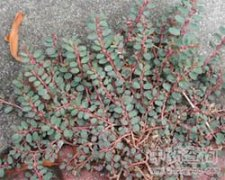

小飞扬草

拼音
Xiǎo Fēi Yánɡ Cǎo
别名
细叶飞扬草、小乳汁草、苍蝇翅
来源
为大戟科大戟属植物千根草Euphorbia thymifolia L.，以全草入药。夏、球采集全草，晒干备用。
生境分布
生于园地、路边或山坡草地湿润处。分布于福建、台湾、湖南、广西、广东、云南等省区。
药材特点
一年生草本，长达15厘米，折断有白色乳汁。茎纤细，匍匐，多分枝，通常红色，稍被毛。单叶对生，有短柄，叶片卵圆形至矩圆形，长4～8毫米，宽3～4毫米，先端圆钝，基部偏斜，边缘有极细锯齿。夏日开淡紫色花，花单性，同株。杯状伞花序单生或少数稀疏簇生于叶腋内；总苞陀螺状，顶端5裂，裂片内面被贴伏的短柔毛；腺体4，漏斗状，有短柄及极小的白色花瓣状附属物；子房3室，花柱2，离生且顶端2裂。朔果卵状三角形，有短柔毛。
性状
干燥全草长约13厘米左右，根小。茎细长，粗约1毫米，红棕色，稍被毛，质稍韧，中空。叶对生，多皱缩，灰绿色或稍带紫色，花序生于叶腋，花小，干缩。有的带有三角形的蒴果。
性味
微酸、涩，微凉。
功能主治
清热利湿，收敛止痒。细菌性痢疾，肠炎腹泻，痔疮出血；外用治湿疹，过敏性皮炎，皮肤瘙痒。
用法用量
0.5～1两；外用适量，鲜品煎水熏洗患处。
化学成分
茎、叶含黄酮甙——芹甙（apiin）为5,7,4'-三羟基黄酮-7-葡萄糖甙。
药理作用
1：无药理作用数据
摘录
《全国中草药汇编》